Back endFocalPay2026
FocalPay Inventory Service
Leading the move of stock management out of a larger service into its own: the plan, the architecture and the safeguards
- Java
- Spring Boot
- MongoDB
- Kafka
- +8
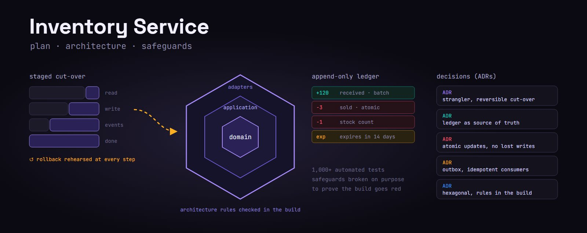
Full-Stack Developer & Team Lead
Scalable APIs, integrations, and web platforms for serious products.
Selected work
I design and build production systems across fintech, SaaS, identity, and industrial platforms, with a backend-heavy skill set and a research background in computer engineering.
Slide 1 of 21 - FocalPay Inventory Service
Back endFocalPay2026
Leading the move of stock management out of a larger service into its own: the plan, the architecture and the safeguards

I build digital products that live on the internet - mostly the parts you don't see. APIs, integrations, identity, and the performance work that decides if a platform feels solid or not.
I started with web development in 2012, during my bachelor's degree, when I got the chance to work at a small company. My job there was editing Joomla and WordPress sites with PHP, CSS and HTML. That's where my interest in this field started, and it never really stopped.
Over time I moved to bigger projects and bigger teams. Those years taught me how to deliver good results under tight deadlines without giving up on quality. I also worked with a lot of different languages and frameworks, which taught me how to pick the right tool for each problem.
portfolio v3.28.3 - interactive shell
Type help for the list of commands, or info to start.
info
name : Amin Norollah
known as : balrug
degree : MSc Computer Engineering (IUST)
career : full-stack developer & team lead
languages : c#, ts, js, java, c++
backend : .net core, spring boot, node.js, nestjs
frontend : angular, vue.js, react
data : sql server, mongodb, redis, apache ignite
identity : identityserver, oauth 2.1, openid connect
experience : 14+ years
publications : 13 published papers
hobbies : working on my own projects
Type a command, or press Tab to complete
These days most of my work is backend: designing and building server applications, APIs, integration flows, testing, debugging, and helping other developers on the team. I mainly work with .NET, C#, JavaScript (ES6+), TypeScript, Java, and both SQL and NoSQL databases. I'm also good at optimising things so data loads faster and workflows run smoother.
Next to product work, I spent three years as a researcher at IUST, together with Université Grenoble Alpes, and published papers on hardware security and real-time systems. Research changed how I work as an engineer: I stopped guessing so much and started measuring things instead.
I design backend services and integrations with clear boundaries and contracts. That way, the next person, often me two years later, can change one thing without breaking four others.
Thirty million requests an hour means there is no room for guessing. First I profile the system, then remove threads that are stuck doing nothing, then fix the slow queries, and only then do I optimise the code. The order matters: that's where the real gains come from.
I have built identity servers with OpenID Connect and OAuth 2.1 for mobile, web and native apps. Because of that, I think authentication should be one platform capability with one owner, not something every team builds again on its own.
With the Cashier Probe framework, I run tests on a real point-of-sale system with real terminals, cash guards, scanners and printers, no mocks. Tests that skip the messy real-world parts are the same tests that pass while production still breaks.
Three years of publishing papers taught me not to trust an explanation just because it sounds reasonable, not until there is a number behind it. That habit helps a lot with production debugging too.
Leading a team for the first time at Fara-control taught me something important: most technical disagreements are really about constraints nobody said out loud. Once you say them clearly, the disagreement usually goes away.
I use it where performance needs to be predictable and memory safety matters. Two projects so far: a network-on-chip simulator with 18 crates, and a disk wiper with zero external dependencies.
The newer part of my job at FocalPay: apps that talk to the cashier system and the hardware in the store, like payment terminals, printers and scanners.
I'm training models to catch data tampering and fraud in accounting records, the kind of thing a manual review usually misses.
Building a full marketplace from the ground up, with an AI layer on the logistics side that gets more throughput out of the same infrastructure.
I have always worked with international teams (Sweden, France, Iran), and that's one part of the job I really enjoy.
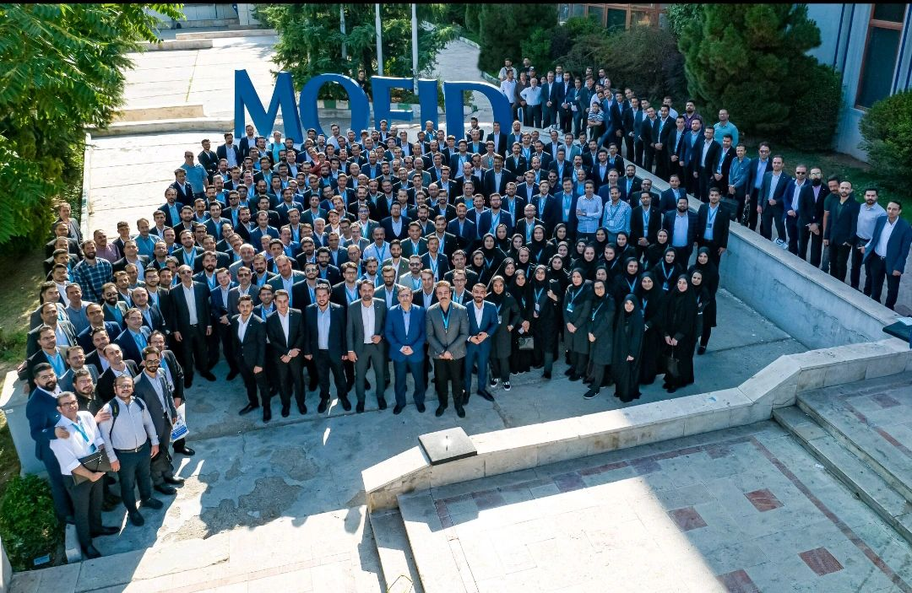
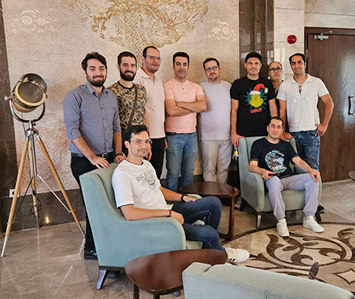
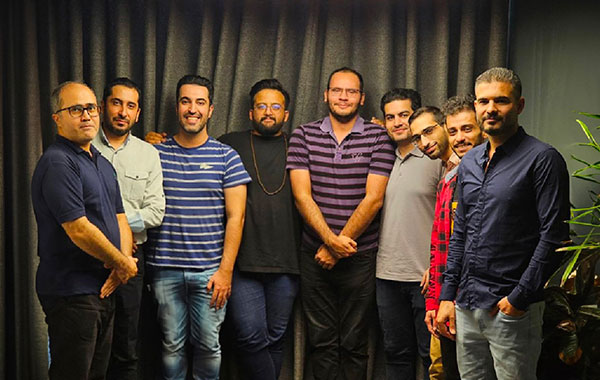
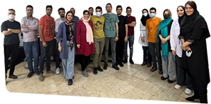
An MSc in computer engineering, three years as a researcher at IUST in collaboration with Université Grenoble Alpes, and thirteen published papers on hardware security, real-time scheduling and data sorting architectures.
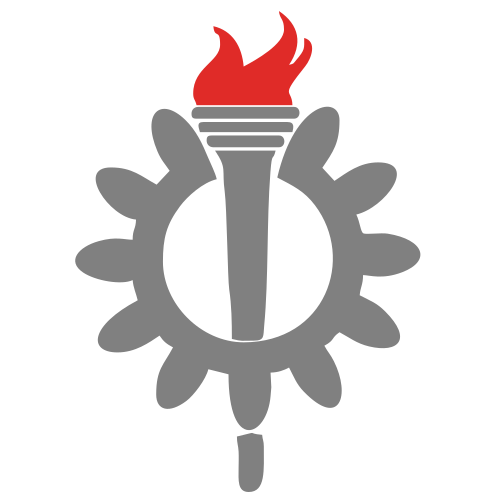
Degree
Iran University of Science and Technology
I obtained an MSc in computer engineering from IUST with a GPA of 4.0, placing me at the top of my class. The programme pushed me toward computer architecture and real-time systems, which is where the rest of my research came from.
Research
IUST
After graduating I stayed at IUST as a researcher, collaborating with Université Grenoble Alpes in France. My work focused on hardware security: one project investigated and identified vulnerable points in high-level code during clock-glitching attacks on RISC-V chips, and another set out to locate sensitive code blocks in C/C++ and in the assembly they compile to.
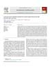
Journal articles Elsevier MICPRO2022First authorA security-aware hardware scheduler for modern multi-core systems with hard real-time constraintsA. NorollahH. BeitollahiZ. KazemiM. Fazeli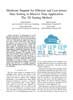
Journal articles IEEE CEM2022First authorHardware Support for Efficient and Low-Power Data Sorting in Massive Data Application: The 3-D Sorting MethodA. NorollahZ. KazemiH. BeitollahiD. Hély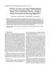
Journal articles IEEE TVLSI2019First authorRTHS: A Low-Cost High-Performance Real-Time Hardware Sorter, Using a Multidimensional Sorting AlgorithmA. NorollahD. DerafshiH. BeitollahiM. FazeliEvery technology here has been used in production or in published research - nothing is listed from a tutorial. The chart below is my own record of where my attention actually went, year by year, since 2011.
The set I move between comfortably. C# and TypeScript are home; C++ came from research and never left, and Rust is the newest, used for systems tools and simulation.
Where most of my work happens: services, API contracts, integration flows and the paths that have to hold under load.
Angular is my default, but I have shipped production Vue and React too - the structure matters more than the framework.
Chosen for the access pattern. SQL Server and PostgreSQL for relational truth, MongoDB for archives, Redis for everything that must be instant.
Two production identity servers built on OpenID Connect and OAuth 2.1, serving mobile, web and native clients from one session model.
Relative focus per language, 2011 to 2026. C++ and C# from the research and desktop years; JavaScript rising with the web work; Java arriving with Spring Boot in 2022 and taking over through 2025 and 2026.
| Year | C# | JavaScript / TypeScript | C++ | Java |
|---|---|---|---|---|
| 2011 | 60 | 0 | 10 | 0 |
| 2012 | 60 | 0 | 20 | 0 |
| 2013 | 0 | 0 | 40 | 25 |
| 2014 | 0 | 30 | 30 | 25 |
| 2015 | 0 | 45 | 30 | 0 |
| 2016 | 40 | 35 | 5 | 0 |
| 2017 | 60 | 0 | 30 | 0 |
| 2018 | 50 | 30 | 10 | 0 |
| 2019 | 40 | 40 | 0 | 0 |
| 2020 | 30 | 50 | 10 | 0 |
| 2021 | 40 | 50 | 0 | 0 |
| 2022 | 35 | 40 | 0 | 10 |
| 2023 | 30 | 30 | 0 | 30 |
| 2024 | 20 | 30 | 0 | 30 |
| 2025 | 15 | 40 | 0 | 45 |
| 2026 | 0 | 40 | 0 | 60 |
FocalPay
Part of the Backend Engineering team at FocalPay, an all-in-one checkout, payments and back-office platform. My focus has shifted toward Android and the physical cashier hardware behind the retail floor.
CyberDesign
Backend services and APIs for the FocalPay checkout and payments platform - a Java and Spring Boot Order API, a Node.js integration into the Centra e-commerce platform, and testing across the stack.
Mofid Securities
Mofid Securities holds the largest share of Iran's stock exchange. I worked in the Mofid Online team across two sub-teams, where the defining challenge was a backend handling roughly thirty million requests per hour.
Cntxts Inc.
Full-stack developer and later front-end lead on the Vicinia indoor mapping and positioning project - a Java Spring Boot back end and an Angular front end for routing, news, advertisements, events and announcements.
SarveenTech
Part-time alongside my other roles: the security side of the backend for the Sarveen Farm management project, then maintainer for all of Sarveen's services - a secure identity server on IdentityServer4 and Skoruba Identity Server Admin.
Fara-control I.P
Multi-level .NET software for monitoring electrical and distribution substations - Simpal v1 and v2 - followed by FaraWAMS, a high-performance real-time platform for power grid and SCADA monitoring where I ended up leading the development team.
Iran University of Science and Technology
Research graduate at IUST collaborating with Université Grenoble Alpes, publishing on hardware security, real-time scheduling and sorting architectures. Thirteen published papers came out of it.
Independent projectsVarious
Web projects for individuals and companies - FNN, Noonnet, a restaurant management system, Neuro20EP and others - mostly React on the front and Node.js behind it, with .NET where the maths got heavy.
MSc in computer engineering at IUST, finished with a 4.0 GPA and first place in my class. This is where computer architecture and real-time systems became my research area.
Ultrasonic co. (Topsonics)Scientific instruments
Where it started. Graphical interfaces for an ultrasonic homogeniser and a 3D printer, plus the website work that turned into a career in web development.
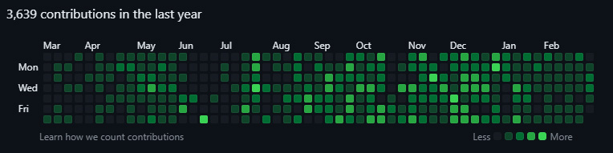
Career3 min read
Your contribution graph is part of your résumé, and it quietly empties the day you are removed from a company's GitHub organization. The fix takes about a minute - if you do it before you leave.
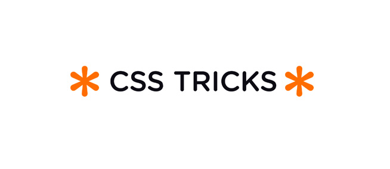
CSS4 min read
You can style the elements before and after the one being hovered without a single line of JavaScript - :has() plus the general sibling combinator is all it takes.
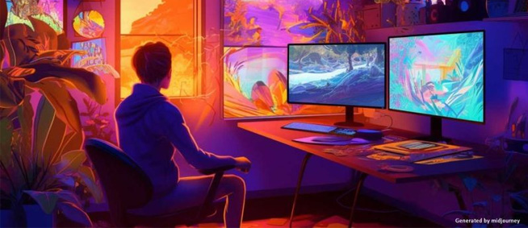
Angular4 min read
After sitting through many Angular interviews, the same few gaps keep showing up. Here are the areas that separate a comfortable Angular developer from a strong one.
Teamwork5 min read
Being a good team member is as important to a project's success as technical skill. Four concrete ways it shows up in the code you ship.
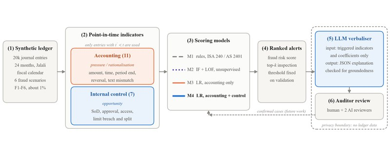
AI researchPersonal
Research on scoring accounting journal entries for fraud risk, with internal controls as model features and an LLM that explains each alert
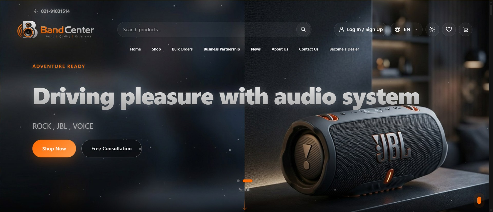
Back endFocalPay
Leading the move of stock management out of a larger service into its own: the plan, the architecture and the safeguards
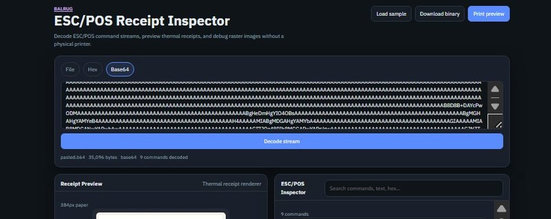
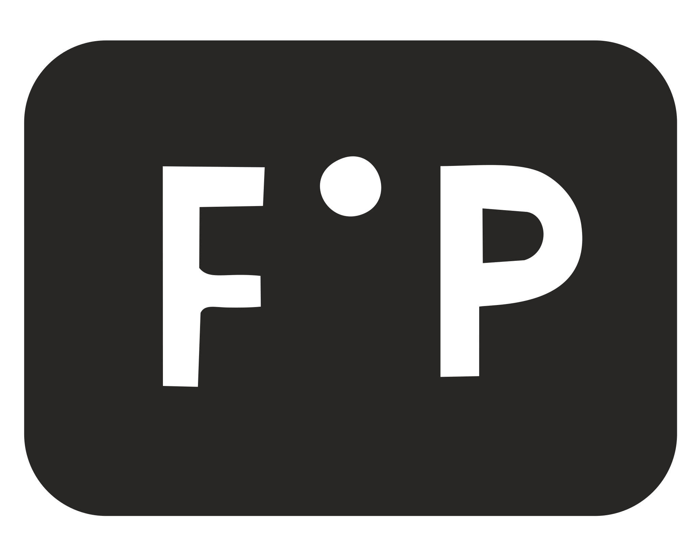
TestingFocalPay
End-to-end automation that operates a real POS - terminals, cash guards, scanners and printers, no mocks
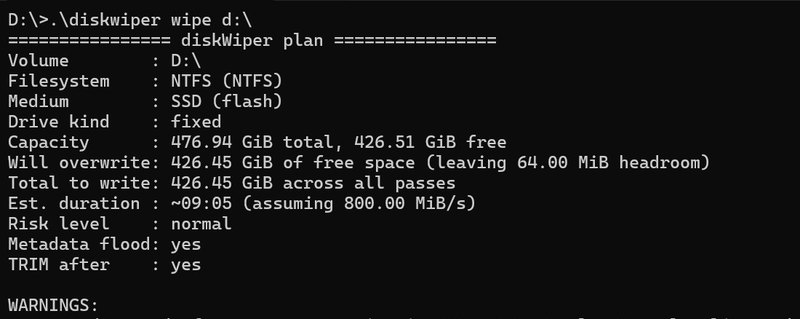
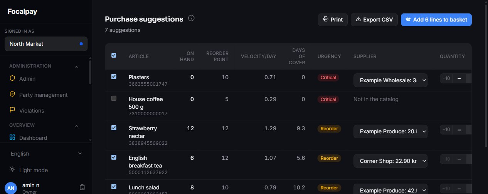
Full stackFocalPay
A B2B wholesale marketplace for Nordic grocery stores, built around a reorder engine that tells each store what to buy next
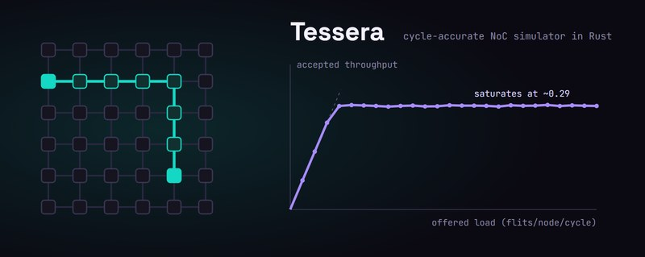
HardwarePersonal
A clean-room Rust successor to PAT-Noxim: deterministic, replayable network-on-chip simulation with a queryable record of every run
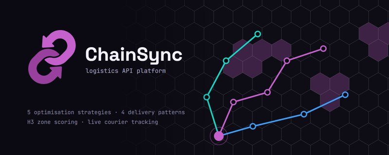
Full stackPersonal
A multi-tenant logistics API that plans couriers and routes, tracks every delivery and reports on all of it
GamePersonal
Snakes & Ladders and Ludo for Android and iOS, offline against AI or online in real time
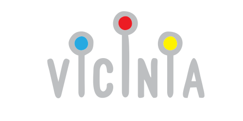
Front endCntxts Inc.
A multi-tenant interactive campus map: search, walking directions, indoor floors, shuttles and parking on any device
Full stackCyberdesign co.
A NestJS backend and React admin that turn store product data into in-store customer navigation
GamePersonal
A real-time empire-building strategy game that runs inside Telegram as a Mini App
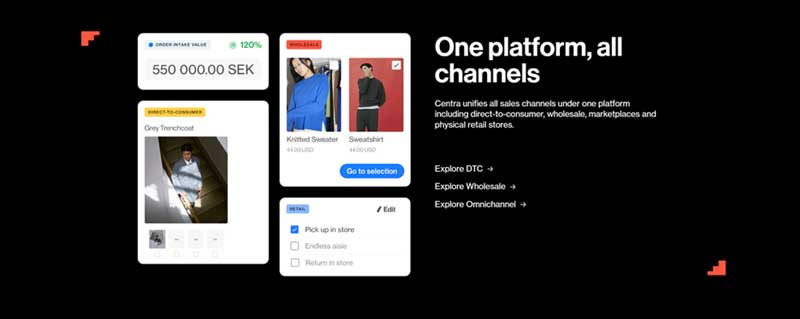
TestingFocalPay co.
API and database validation with Docker-in-Docker throwaway services, built for speed of test writing
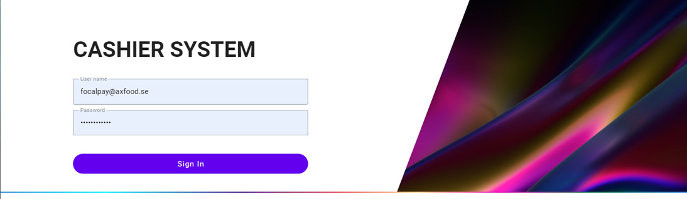
Back endMofid Securities
Refactor, restructure, optimise the stored procedures - and ship to current standards on a tight clock
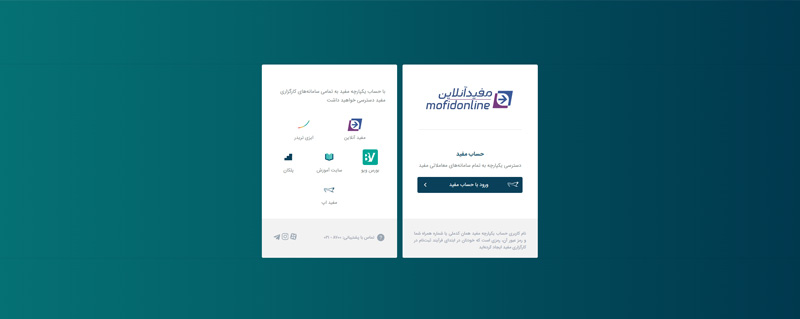
LibraryCntxts Inc.
Google Maps extended with 2D and 2.5D building views, better pins, and routing other apps get for free
Full stackCntxts Inc.
The back office behind the kiosks: indoor routing, information services and equipment anti-theft
Back endCntxts Inc.
Dependency modernisation, ongoing maintenance and the new APIs each feature needed
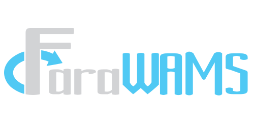
IdentityFara-control I.P
One session model for mobile, web and native clients, on OpenID Connect and OAuth 2.1
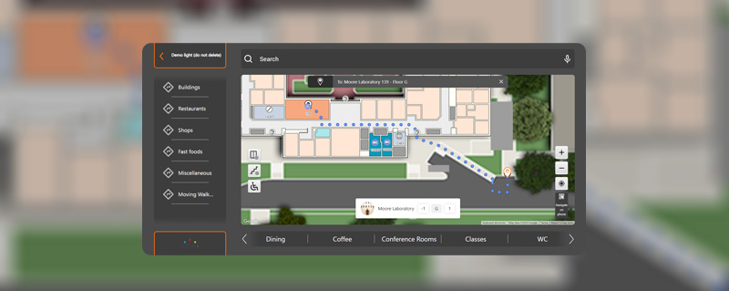
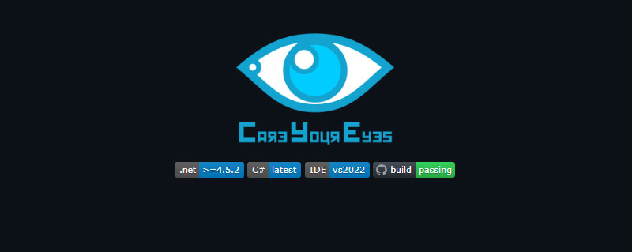
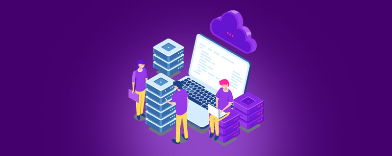
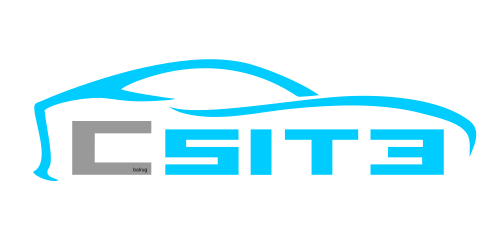
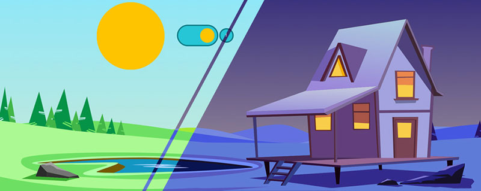
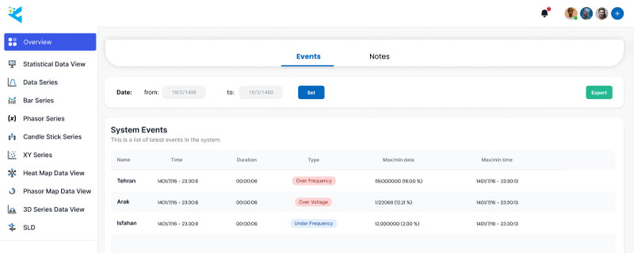
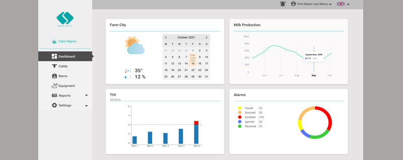
IdentitySarveenTech
Complete authentication and authorisation with single session sign-in across every client type
Back endASI Green Techs co.
A clean Express.js service with a documented API surface from the first commit
DesktopClient work
Deep-learning stock market analysis across more than thirty markets, instantly
Full stackClient work
Orders, menus and staff in one Express.js and MongoDB system, built freelance
DesktopFara-control I.P
The archive-study tool that laid the foundation for Simpal v2 and FaraWAMS
Full stackFara-control I.P
Real-time power grid study tooling - time series, XY plots, flow diagrams and heat maps
DesktopNikAva co.
Health-care software that turns eight channels of brain signal into something a neurologist can read
Back endClient work
An early Express.js application, and where I learned to document an API before writing it
I like where I work and I'm not planning to move. If you want someone to look at a system or a technical decision, or you have an idea you'd like to talk through, send me a message. I read everything myself.
The third version of my portfolio, designed and built by me.